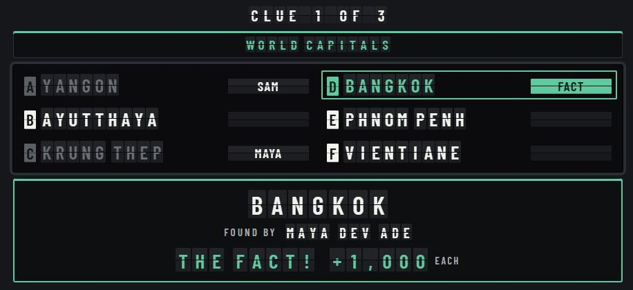

Game Night
Live
One screen everyone can see runs the game, and players join on their own phones with a QR code. There's nothing to install.
React, Vite, Express, Socket.IO
More about this project
- What's hard about it
- Keeping every phone and the TV in step over Socket.IO. The server owns each game, checks that an action came from the right phone, and counts a double tap once.
- Tests
- 272 automated tests